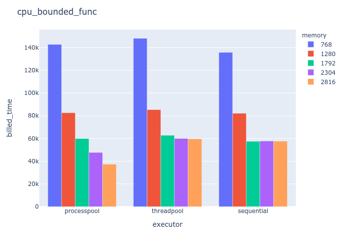

<!-- .slide: data-background-image="assets/bg_home.jpg" --> # Unleash the power of concurrency in AWS lambda How, when and if use python concurrency in AWS lambda
<!-- .slide: data-background-image="assets/bg_me.jpg" --> ## Me - UI Engineer at [hotels.com](https://hotels.com) - Indie Developer and Blogger at [rightright.me](https://rightright.me) - @glsorre on [github](https://github.com/glsorre) and [twitter](https://twitter.com/glsorre)
<!-- .slide: data-background-image="assets/bg_agenda.jpg" --> ## Agenda - introduction to AWS lambda - tasks: CPU and I/O bounded - python concurrency: threads and processes - code diving - data presentation
<!-- .slide: data-background-image="assets/bg_lambda.png" --> ## AWS lambda > lets you run code without provisioning or managing servers - scalable - 15 minutes limit
<!-- .slide: data-background-image="assets/bg_lambda.png" --> ## AWS lambda - python first-class citizen - performance grow with memory assigned
<!-- .slide: data-background-image="assets/bg_tasks.png" --> ## Tasks: CPU and I/O bounded > a task is CPU bound if it would go faster if the CPU were faster > a task is I/O bound if it would go faster if the I/O subsystem was faster
<!-- .slide: data-background-image="assets/bg_tasks.png" --> ## Tasks: big O $ O(n^2) $ → **selection sort** $ O(\log{}n) $ → **quick sort**
<!-- .slide: data-background-image="assets/bg_concurrency.png" --> ## Python Concurrency - threads - processes - ~~asyncio~~
<!-- .slide: data-background-image="assets/bg_concurrency.png" --> ## Python Concurrency ##### threads <div class="cols"> <div class="col1"> </div> <div class="col2"> <h6>pros</h6> <ul> <li>lightweight</li> <li>shares memory</li> </ul> <h6>cons</h6> <ul> <li>inside the GIL</li> </ul> </div> </div>
<!-- .slide: data-background-image="assets/bg_concurrency.png" --> ## Python Concurrency ##### processes <div class="cols"> <div class="col1"> </div> <div class="col2"> <h6>pros</h6> <ul> <li>outside the GIL</li> <li>can use multiple cores</li> </ul> <h6>cons</h6> <ul> <li>does not share memory</li> </ul> </div> </div>
<!-- .slide: data-background-image="assets/bg_processpool_error.jpg" --> ## Python Concurrency ##### batteries included concurrent.futures: - ThreadPoolExecutor - ~~ProcessPoolExecutor~~
<!-- .slide: data-background-image="assets/bg_concurrency.png" --> ## a processpool: the skelethon ```python from multiprocessing import Process from threading import Thread from queue import Queue class Pool: def __init__(self, max_workers): self.max_workers = max_workers self.threads = [] self.queue = Queue() ```
<!-- .slide: data-background-image="assets/bg_concurrency.png" --> ## a processpool: the map method ```python class Pool: def map(self, func, args): for i in range(self.max_workers): t = Thread(target=_run, args=(self.queue, )) t.start() self.threads.append(t) for a in args: self.queue.put(Process(target=func, args=(a, ))) self.queue.join() for i in range(self.max_workers): self.queue.put(None) ```
<!-- .slide: data-background-image="assets/bg_concurrency.png" --> ## a processpool: the close method ```python class Pool: def close(self): for t in self.threads: t.join() ```
<!-- .slide: data-background-image="assets/bg_concurrency.png" --> ## a processpool: thread func ```python def _run(q): while True: p = q.get() if p is None: break p.start() p._popen.wait() q.task_done() ```
<!-- .slide: data-background-image="assets/bg_concurrency.png" --> ## a processpool: putting all together ```python from multiprocessing import Process from threading import Thread from queue import Queue def _run(q): while True: p = q.get() if p is None: break p.start() p._popen.wait() q.task_done() class Pool: def __init__(self, max_workers): self.max_workers = max_workers self.threads = [] self.queue = Queue() def map(self, func, args): for i in range(self.max_workers): t = Thread(target=_run, args=(self.queue, )) t.start() self.threads.append(t) for a in args: self.queue.put(Process(target=func, args=(a, ))) self.queue.join() for i in range(self.max_workers): self.queue.put(None) def close(self): for t in self.threads: t.join() ```
<!-- .slide: data-background-image="assets/bg_concurrency.png" --> ## Python Concurrency ##### my processpool usage ```python # My processpool pool = Pool(4) pool.map(cpu_bounded_func, data) pool.close() # ThreadPoolExecutor executor = ThreadPoolExecutor(max_workers=4) executor.map(io_bounded_func, data) executor.shutdown() ```
<!-- .slide: data-background-image="assets/bg_tasks.png" --> ## Test ##### Independent Variables | executor | memory (mb) | task | number of ops | |-------------|-------------|----------------|---------------| | sequential | 768 | selection sort | many | | threadpool | 1280 | quick sort | | | processpool | 1792 | url get | | | | 2304 | | | | | 2816 | | |
<!-- .slide: data-background-image="assets/bg_tasks.png" --> ## Test ##### Tasks - **selection sort** → cpu_bounded_func - **quick sort** → cpu_bounded_func_quick - **url get** → io_bounded_func
<!-- .slide: data-background-image="assets/bg_results.jpg" --> <!-- .slide: data-transition="fade" --> ## cpu bounded results ##### 20 ops 
<!-- .slide: data-background-image="assets/bg_results.jpg" --> <!-- .slide: data-transition="fade" --> ## why threads are worst than sequential ##### 20 ops 
<!-- .slide: data-background-image="assets/bg_results.jpg" --> <!-- .slide: data-transition="fade" --> ## process pool boost ##### 20 ops 
<!-- .slide: data-background-image="assets/bg_results.jpg" --> ## costs ##### 20 ops | executor | memory (mb) | average duration (ms) | executions/month | cost ($) | |-------------|-------------|-----------------------|------------------|----------| | sequential | 1792 | 59000 | 1100 | 1.89 | | processpool | 2816 | 39000 | 1100 | 1.79 |
<!-- .slide: data-background-image="assets/bg_results.jpg" --> ## increasing operations 
<!-- .slide: data-background-image="assets/bg_results.jpg" --> <!-- .slide: data-transition="fade" --> ## io boundend results ##### 200 ops 
<!-- .slide: data-background-image="assets/bg_results.jpg" --> <!-- .slide: data-transition="fade" --> ## threads shine ##### 200 ops 
<!-- .slide: data-background-image="assets/bg_results.jpg" --> <!-- .slide: data-transition="fade" --> ## processes are penalized ##### 200 ops 
<!-- .slide: data-background-image="assets/bg_results.jpg" --> ## costs ##### 200 ops | executor | memory (mb) | average duration (ms) | executions/month | cost ($) | |-------------|-------------|-----------------------|------------------|----------| | sequential | 1280 | 3000 | 10000 | 0.63 | | threadpool | 1792 | 2000 | 10000 | 0.58 |
<!-- .slide: data-background-image="assets/bg_results.jpg" --> ## increasing operations 
<!-- .slide: data-background-image="assets/bg_results.jpg" --> ## increasing operations 
<!-- .slide: data-background-image="assets/bg_results.jpg" --> ## what happens if O is small 
<!-- .slide: data-background-image="assets/bg_results.jpg" --> ## cpu_bounded comparison <div class="cols"> <div class="col1"> </div> <div class="col2">  </div> </div>
<!-- .slide: data-background-image="assets/bg_results.jpg" --> ## costs | executor | memory (mb) | average duration (ms) | executions/month | cost ($) | |-------------|-------------|-----------------------|------------------|----------| | sequential | 1792 | 750 | 10000 | 0.22 | | processpool | 2816 | 600 | 10000 | 0.25 |
<!-- .slide: data-background-image="assets/bg_conclusions.jpg" --> ## conclusions - extreme applications - task bigger than ~0.4 sec - 1792 Mb
<!-- .slide: data-background-image="assets/bg_conclusions.jpg" --> ## Thanks - code and slides sources: [https://github.com/glsorre/py_lambda_concurrency](https://github.com/glsorre/py_lambda_concurrency) - slides: [https://rightright.me/py_lambda_concurrency](https://rightright.me/py_lambda_concurrency) - github: [https://github.come/glsorre](https://github.come/glsorre) - twitter: [https://twitter.come/glsorre](https://twitter.come/glsorre)
<!-- .slide: data-background-image="assets/bg_conclusions.jpg" --> ## Questions?